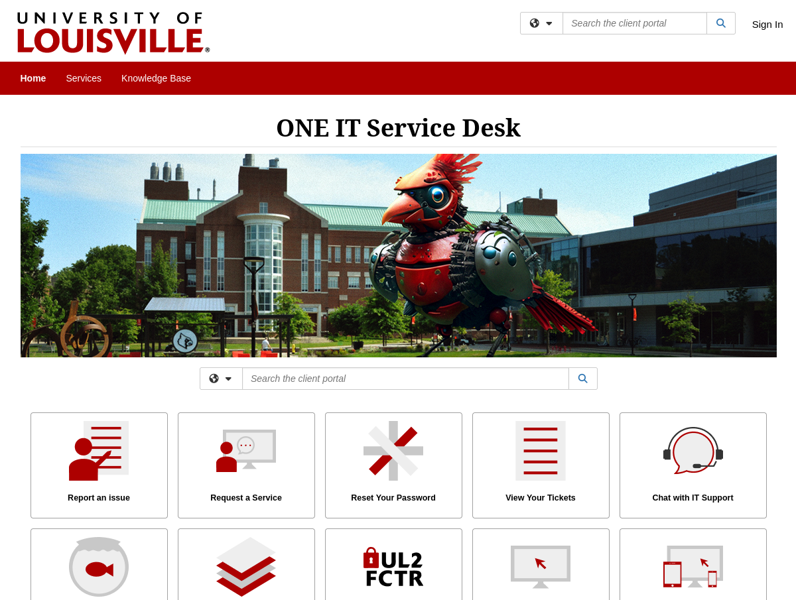

Accounts and Support
Request an account
Please ensure that you have read Rosalind’s System Use Policies and have agreed to it before requesting an account. Keep in mind that each applicant must log in and complete their own account request using their unique ULINK account.
To obtain an account, you must either be a faculty member or be affiliated with a faculty-led research project.
Accounts for UofL individuals
If you are a faculty member, you are considered the faculty lead/PI and should enter yourself in that role. If you are not a faculty member, provide the name of the faculty lead/PI for the research project you will be working on.
To request an HPC account:
Navigate to the University’s Service Desk portal and log into the portal using your ULINK credentials.

Scroll down to the Featured Services section and click on Research Computing Support, or search for Research Computing Support.
Under the Services section, click on High-Performance Computing (HPC)
Click on the Request Service button.
Under the Ticketing Details section, locate the Access Areas drop-down menu and select Research Computing Account (Local HPC / Storage / Other Servers).
Fill out the rest of the form as appropriate.
{kind=link}
{kind=link}
{kind=link}
{kind=link}
{kind=link}
UofL VPN Connection
As part of the HPC onboarding process, you are set up with a University supplied VPN account.
The VPN is required to connect to Research Computing Resources from off campus.
To connect to the VPN for the first time:
Browse to https://vpn.louisville.edu and log in.
Choose a client based on your Operating System to download and install.
When the client prompts for a login, the Portal parameter is vpn.louisville.edu
When you have successfully connected, a services connected icon will appear in your taskbar
Browse to https://vpn.louisville.edu and log in.
Choose a client based on your Operating System to download and install.
When the client prompts for a login, the Portal parameter is vpn.louisville.edu
When you have successfully connected, a services connected icon will appear in your taskbar
Create a ticket using the steps found below
A member of the Research Computing team will help you in providing a client and the steps needed to configure it to work with your specific OS
More information can be found on the University’s VPN information page
Request Support (Tickets)
When filling out Support Request forms, it is important to specify which cluster you are requesting support for
Navigate to the University’s Service Desk portal and log into the portal using your ULINK credentials.
Click on Request a Service
Click Research Computing
Select the links that best describe you needs, you might have to click through multiple pages in order to proceed to the next step
Click on Request Service
Fill out the form.
Once you fill out the form, a confirmation will be sent to your UofL email. Likewise, any follow-ups from the Research Computing team will be delivered to your email.